De drankkaart
Waar heb je
goesting in?
Een compacte kaart voor grote en kleine dorst. Vraag gerust wat er vandaag koel staat.

Goed om te weten
Ook zonder, altijd met smaak.
Vraag naar alcoholvrije varianten. Heb je een allergie of wil je weten wat er precies in je glas zit? Spreek ons even aan.
Download de originele kaart ↓